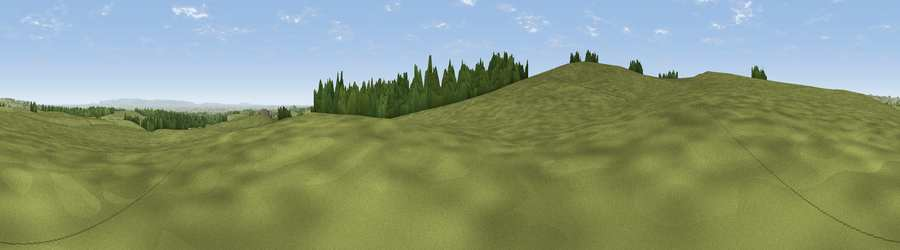

Black Hill
#28300 in England · top 65% of its area beats it · near Kirkby MalzeardThe view, rendered

A 360° render of this exact spot computed from the terrain model, tree cover and land cover — summer colours, afternoon light, calibrated against photographs of famous viewpoints. Real trees, hedges and buildings will differ in detail.
The panorama
Grey silhouette: terrain skyline in each direction (720 bearings, Earth curvature and refraction included). Dashed green: skyline with trees (+15 m) and buildings (+8 m) as obstacles. Blue strip: how far the ground is visible on each bearing.
Where the view opens
Wedge length = distance to the farthest visible ground on that bearing (vegetation-aware). Rings at 10, 25 and 50 km.
What fills the view
88% grassland · 6% cropland · 5% woodland ·
Angular shares of the visible panorama (visual magnitude), not map area. Landscape diversity 0.22 (0–1 Shannon).
Key numbers
More beautiful places nearby
The staircase of upgrades: each row has a higher view potential than everything closer. Driving times are estimates from straight-line distance, calibrated against real road routing — check an actual route before setting out.
| Place | Direction | Drive | Score |
|---|---|---|---|
| Toft Ridge | ESE · 1 km | ~3 min | 46.8 |
| Viewpoint near Low Laithe | S · 4 km | ~9 min | 50.6 |
| Viewpoint near Kirkby Malzeard | N · 4 km | ~10 min | 53.0 |
| High Ruckles | WSW · 5 km | ~11 min | 60.3 |
| Viewpoint near Low Laithe | S · 5 km | ~11 min | 66.1 |
| Viewpoint near Swinton | N · 7 km | ~15 min | 68.4 |
| Viewpoint near Grewelthorpe | NNE · 7 km | ~15 min | 73.9 |
| Viewpoint near Bewerley | SW · 10 km | ~20 min | 76.8 |
54.12837, -1.67862 · source: osm peak · position refined by local search. Computed location — check access rights before visiting.